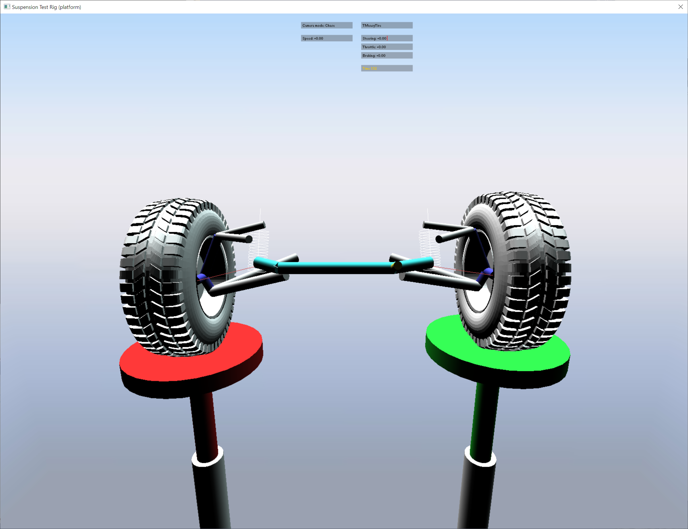
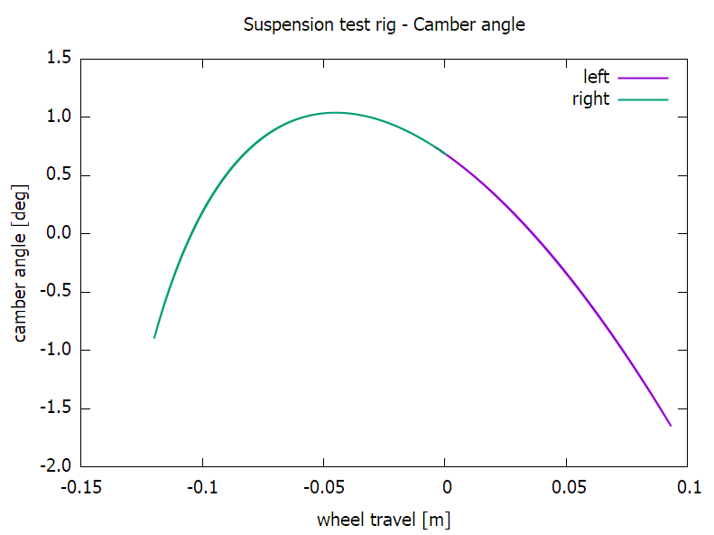
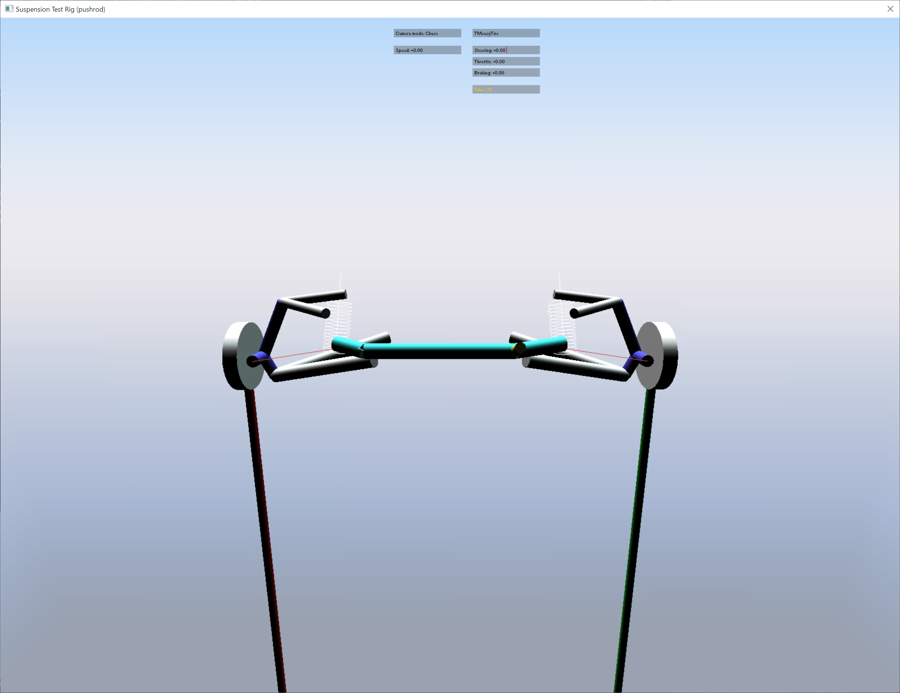
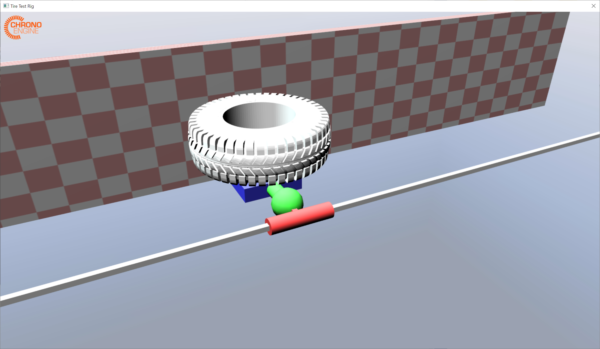
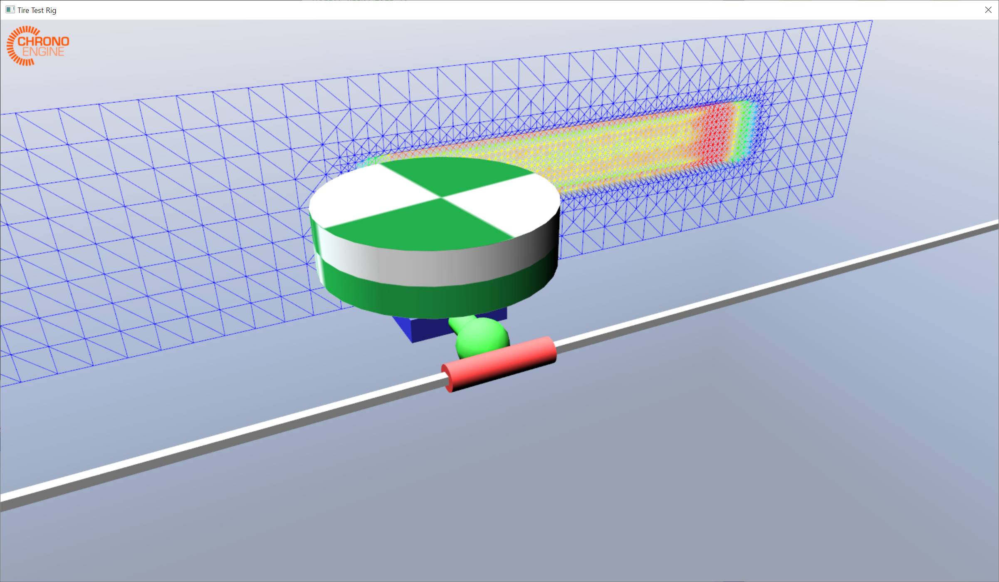

测试台架
悬架试验台
ChSuspensionTestRig 是一种用于测试整个车辆悬架组件的装置。可以指定要测试的悬架：
- 通过独立的 JSON 文件（可能包含或不包含转向子系统）
- 作为车辆 JSON 规范文件中的指定轴
- 作为现有车辆的指定车轴（必须已初始化）
悬架试验台有两种型号：
- ChSuspensionTestRigPlatform 使用两个独立的刚性平台，通过与轮胎的相互作用来驱动悬架机构。请参阅 demo_VEH_SuspensionTestRigPlatform。
- ChSuspensionTestRigPushrod 将直接驱动力施加到车轮主轴上。请参阅 demo_VEH_SuspensionTestRigPushrod。
下图显示了 ChSuspensionTestRigPlatform 模拟（使用前双叉臂悬架和 TMeasy 轮胎）的快照和示例输出图。




下图是使用前双叉臂悬架的 ChSuspensionTestRigPushrod 模拟的快照。

轮胎试验台
ChTireTestRig 是一种用于测试单个轮胎与 刚性 、SCM 可变形 或 粒状地形 相互作用的装置。所有可用的 Chrono::Vehicle 轮胎模型 都可以与此测试装置一起使用，但只能与一致的地形模型结合使用。
轮胎试验台允许纵向速度、车轮角速度和车轮滑移角随时间变化，支持纵向速度和角速度的自动选择，以强制执行指定的纵向滑移值，并允许指定外倾角（在模拟期间保持不变）。
参见 demo_VEH_TireTestRig 和 demo_VEH_TireTestRig_Multicore。
下面的图片是单轮胎测试的快照，分别在刚性地形上使用 Pac02 轮胎和在 SCM 可变形地形上使用刚性轮胎。

